Impermeabilização
na Obra
Queveks Veda Concreto
Vai dentro da massa do concreto. Fecha os poros (hidrofugação), barra a umidade e protege as ferragens, sem perder resistência.

Como usar no concreto
100 ml de Veda Concreto para cada saco de 50 kg de cimento (ou 50 ml por lata de 18 L).
- Diluir o produto na água do traço e depois adicionar a areia e a brita.

Concreto usinado
- O produto vai dentro do caminhão da concreteira.
- Dá pra pedir à concreteira já com o impermeabilizante, ou comprar e colocar na obra.
- Nós colocamos na obra: fica mais em conta e a qualidade é a mesma.
Asfalton Hidroasfalto
O "piche": passado por cima da viga já curada, forma uma película preta impermeável. Serve em baldrames, alicerces, lajes e muros de arrimo.
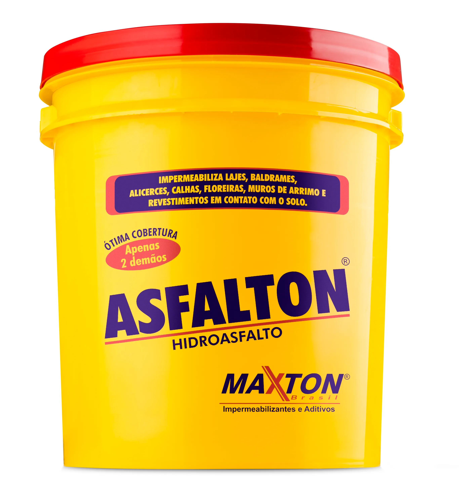
Onde passar (e onde não)
- Passa-se em toda a viga: face interna, externa e no topo.
- Onde vão nascer os pilares.
- Ali o concreto do pilar precisa colar no concreto da viga. O piche vira uma barreira e impede essa aderência, criando uma junta fraca.
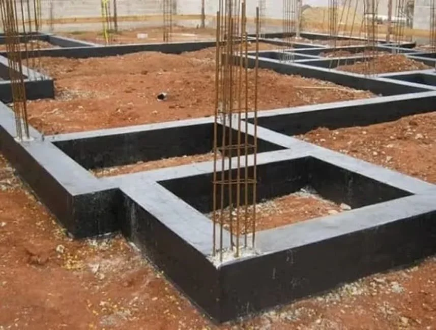
Como nós fazemos
- Passamos o piche apenas na parte superior (topo), não nas faces interna e externa.
- Preenchemos a viga de terra pra concretar o piso antes de levantar as paredes.
- A máquina passa por cima da viga (pra encher e pra abrir e fechar valetas). Se o piche já estivesse nas faces, ela danificaria tudo.
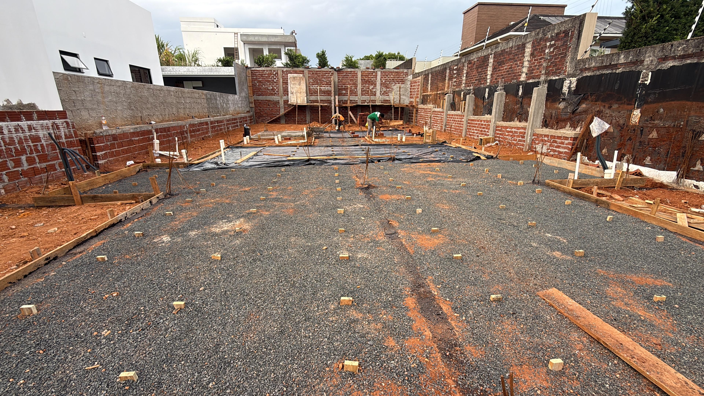
Preparo antes do piche
- Preencher a viga baldrame com terra.
- Fazer toda a infraestrutura: encanamento, elétrica, hidráulica e gás (mangueiras pra passar os fios).
- A máquina abre as valetas do encanamento e depois fecha. Por isso o piche não pode ir antes.
- Nivelar (emparelhar) a terra no ponto certo pra fazer o piso.
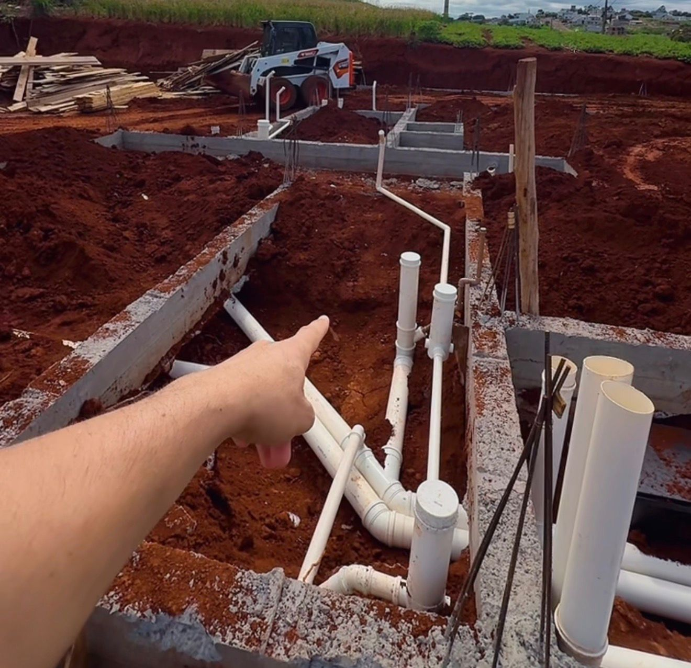
Aplicação do piche
- Varrer as vigas pra tirar o mais grosso e lavar com mangueira pra tirar toda a terra e sujeira.
- Esperar a viga secar (ela estará molhada da lavagem).
- Passar as demãos de piche com a brocha (mínimo 2 demãos, intervalo de 2 a 6 horas).
- Com o piche seco, começa o piso. Daí entra a próxima etapa: impermeabilização do piso.
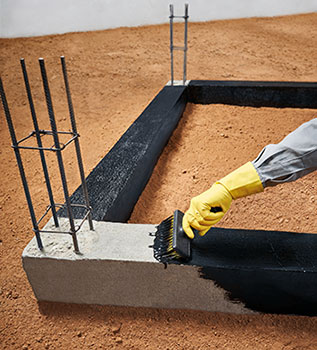
Veda Concreto no piso
O mesmo impermeabilizante de massa da viga baldrame (Veda Concreto), agora no concreto do piso. Barra a umidade que sobe do solo.
Como usar no piso
100 ml de Veda Concreto para cada saco de 50 kg de cimento (a mesma da viga).
- O concreto do piso é feito na betoneira.
- O Veda Concreto é colocado na betoneira, junto na mistura.
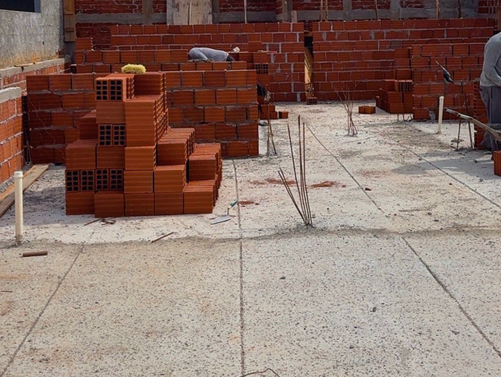
Veda Reboco
Aditivo que vai na massa (argamassa) de assentamento e reboco. Fecha os poros (hidrofugação), barra a umidade e deixa a massa mais trabalhável.
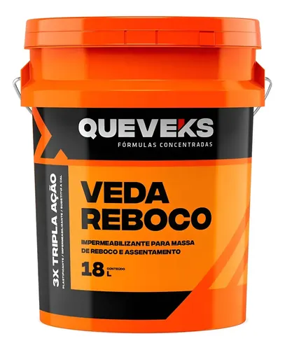
Onde usar e quantas fiadas
- Na massa de assentamento das primeiras fiadas, acima do baldrame.
- Traço 1:3: 120 ml de Veda Reboco por lata de cimento (regra geral: 40 ml por lata de 18 L de areia).
- A recomendação é nas primeiras fiadas acima do baldrame.
- Deixamos o pedreiro à vontade (pode subir até a metade da parede): melhor mais fiadas do que menos, com uma massa só pra parede toda.
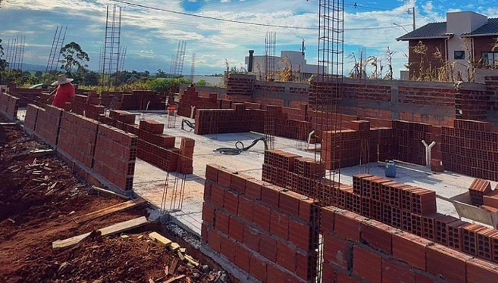
Reboco externo
- Nas paredes externas usamos o Veda Reboco na massa (mesmo produto das fiadas).
- Rebocamos a parede externa só até o início da viga baldrame.
- Assim o reboco não encosta no solo e a umidade não sobe por ele.
- Resultado: sem umidade na tinta e sem problema de infiltração.
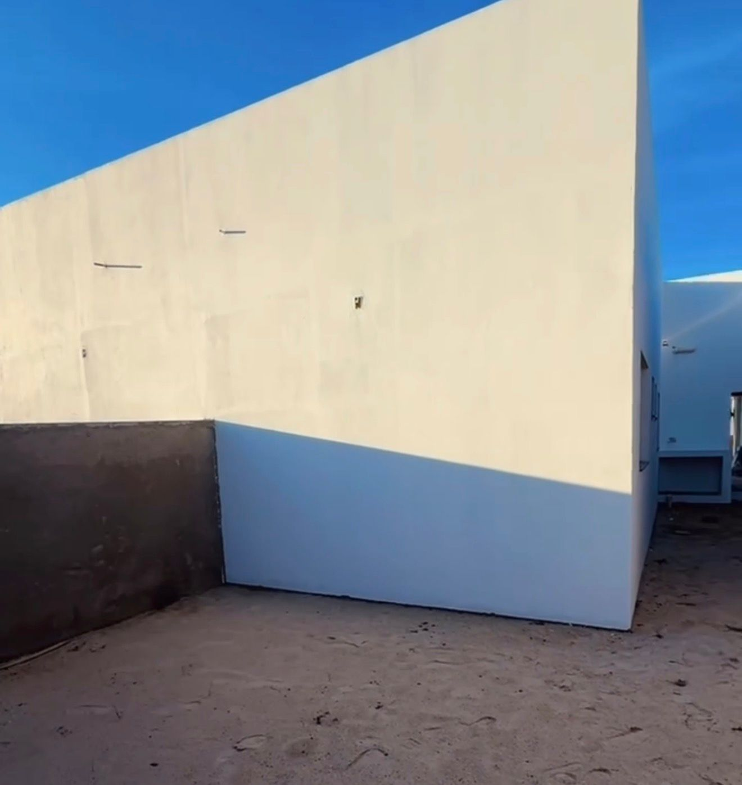
Maxpren Laje
Manta líquida acrílica (aplicada a frio, com rolo). Forma uma película flexível que acompanha o movimento da laje e cobre microfissuras.
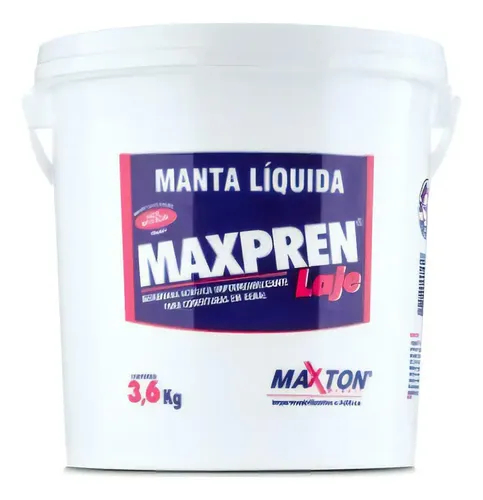
Como aplicar
- 1ª demão diluída 10% em água (funciona como selador).
- Demais demãos sem diluir, em sentidos cruzados, 2 a 4 h entre elas.
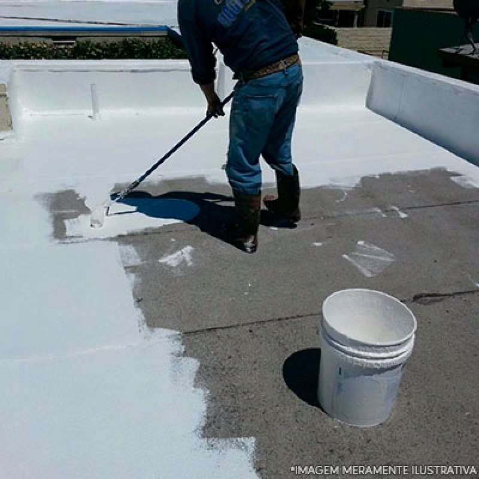
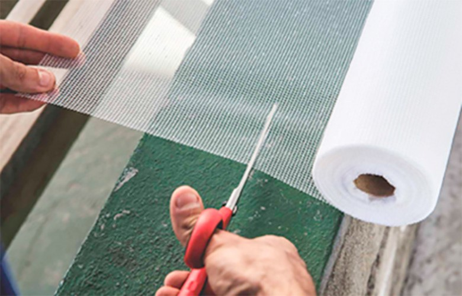
Veda-Fácil Plus
Revestimento impermeabilizante semi-flexível, bicomponente (pó + líquido). Aplica direto sobre alvenaria, concreto ou argamassa.
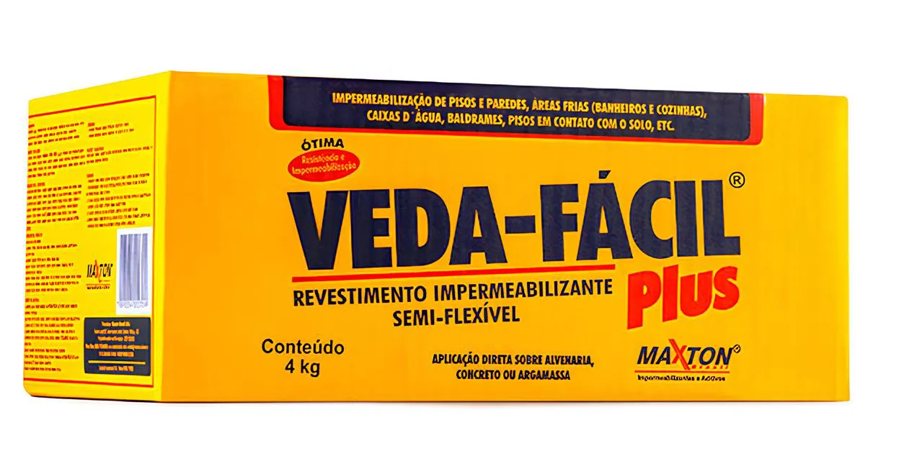
Onde e como aplicar
- Nas paredes do banheiro.
- No box: 1,80 m de altura nas paredes e no chão do box.
- 3 demãos cruzadas (vertical, horizontal, vertical), com 6 h entre elas.
- Superfície umedecida antes (não encharcada).
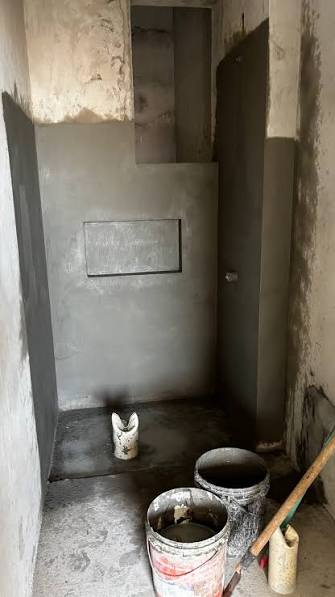
Rebotec
Aditivo em pó (base cimentícia) que torna o cimento, a argamassa e o rejunte impermeáveis. Usamos na massa do muro (com a lona).
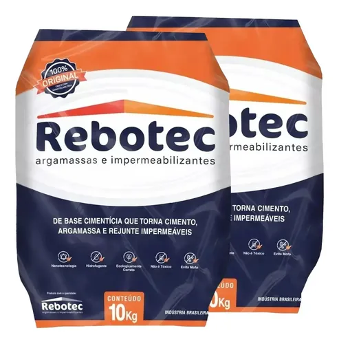
Manta asfáltica
Membrana de asfalto em rolo, aplicada com maçarico sobre um primer asfáltico (o Asfalton). Forma uma camada impermeável e flexível.
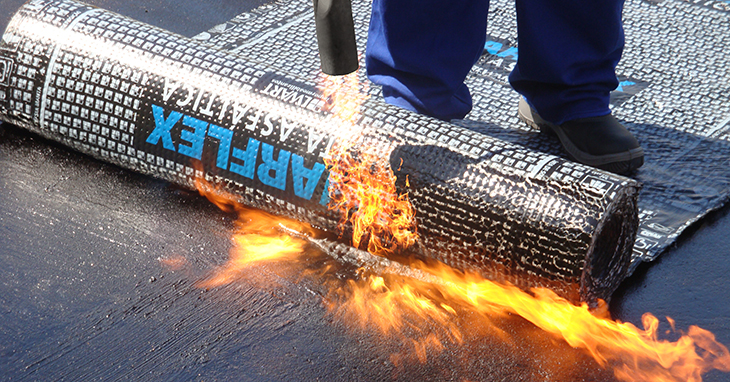
Parede da casa (terra contra)
- Passar o Asfalton (ou piche) como base.
- Aplicar a manta asfáltica por cima.
- Bater uma massa de proteção contra a manta (pra pedra não furar a manta).
- Jogar a terra contra.
Muro (terra contra)
- No lado externo do muro, fazer uma massa com Rebotec, queimada (~1,5 cm).
- Largar a lona contra a massa.
- Jogar a terra contra a lona.
Coral Sol & Chuva
Tinta impermeabilizante para paredes externas. Forma uma película flexível que previne fissuras e infiltrações.
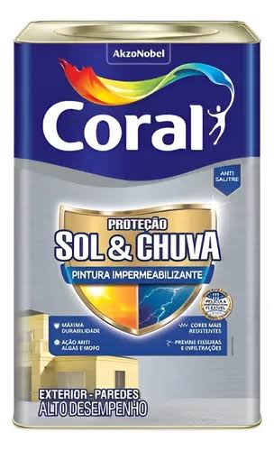
Contorno das janelas
- Na base e no contorno das janelas (peitoril e laterais).
- Passamos a manta líquida para laje (a Maxpren Laje da Etapa 05) no contorno.
- Cria uma barreira que evita a infiltração pela janela.
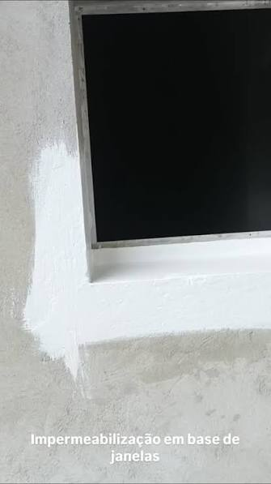